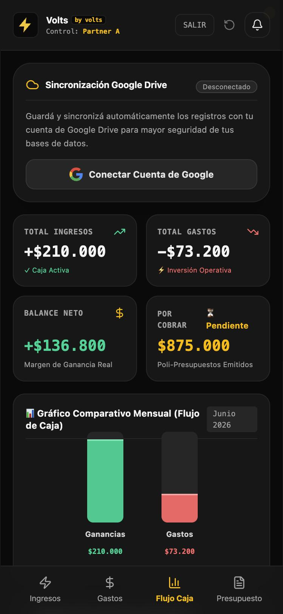
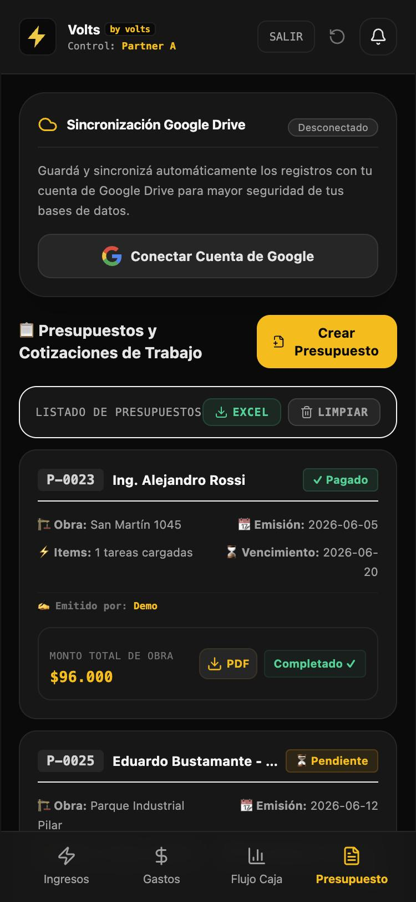
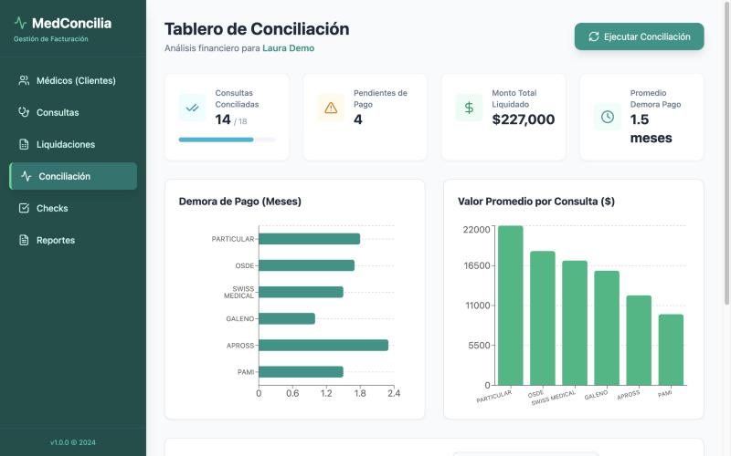

2026 – Present
Accounting Contractor
US hospitality client · Remote
- Accounts payable in Bill.com and QuickBooks Online, plus daily sales reconciliation from Toast POS.
Licensed Public Accountant · Córdoba, Argentina
Senior Accountant for US companies: month-end close, reconciliations and financial reporting, with AI and automation built into the workflow.
Accountant first, builder second.
I trained in external audit at EY and then owned the month-end close for three US companies under US GAAP, delivering P&L, balance sheet, cash flow and budget-vs-actual reports straight to their CFOs.
I care about books that hold up to review, and about the decisions they make possible. That's why I study corporate finance and build small tools that take repetitive work off the close, so the time goes into analysis.
US accounting, Big Four audit and local practice.
US hospitality client · Remote
Exact Partners · US client accounting · Remote
EY (Ernst & Young) · Córdoba
Industrial group · Córdoba
Tools I design for real accounting problems. Demos run on sample data only.
A pocket finance office for independent electricians. It turns phone photos of receipts into categorized expenses, tracks income and cash flow, issues PDF quotes and chases unpaid ones. Built for a two-partner electrical services business that ran its numbers on paper.




Client name, logo and people are anonymized; all figures are sample data.
Built for my own clients, who are doctors. Clinics pay them through settlements that cover many consultations at once, and checking line by line is slow and error-prone. MedConcilia imports consultations and settlements from Excel, matches them automatically, scores how likely each pending item is to match, and shows payment delays and average value by health insurer.


Custom Claude Code skills plus an agent for my Argentine tax practice. They compare each client's billing against the monotributo category caps, project the next recategorization, calculate the monthly fee, raise alerts and build a full tax overview across ARCA, Rentas Córdoba and municipal taxes.
My thesis: a survey of 20 audit professionals in Argentina. 85% had never used AI in their audits, and the main barrier was lack of knowledge, not interest.
Reusable Excel and Power Query templates that cut payroll and reconciliation prep time by about 60%, with AI to draft entries and explain variances.
A bookkeeping system that keeps a small rotisserie owner's books clear and up to date. Built with Google AI Studio.
Scheduling and finances for psychologists, with encrypted clinical records and Google Calendar, Drive and Gmail integration.
P&L, balance sheet and cash flow with month-over-month and budget-vs-actual commentary, delivered within the 7-day close.
What I work in every day.
Open to Senior Accountant, Controller and FP&A roles with US companies, remote from Córdoba.